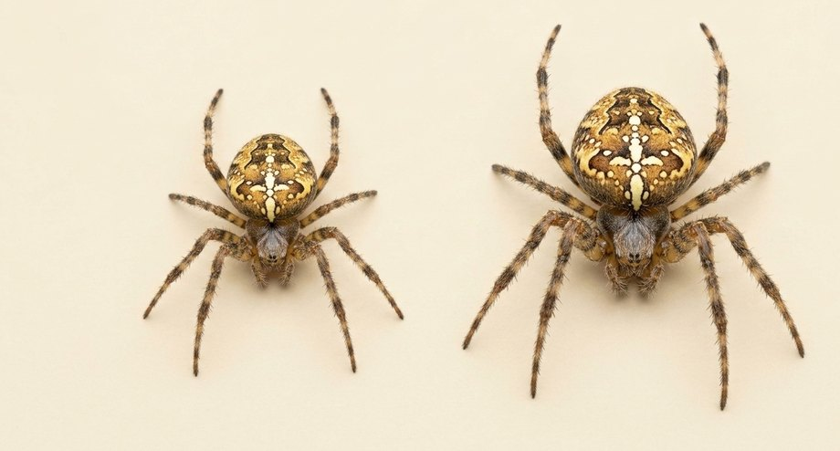
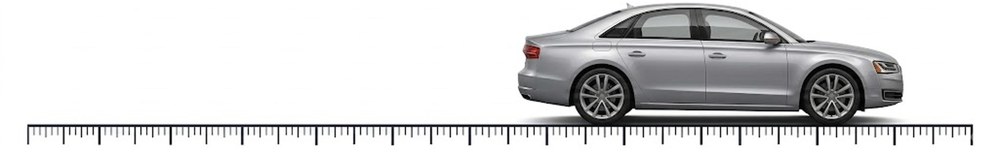

Short conversations between a student and a generative AI, written for a first-semester calculus course. They are sorted by topic in the tabs below. Each takes about twenty minutes, needs nothing installed, and saves the conversation as you go.
Open any of them, type the class passcode, and press Start the activity. The AI is Claude, from Anthropic. Messages go through the class's server to Claude to get replies, and nowhere else. The server keeps no copy of them.
Three activities on approximation, scaling and limits.
Approximation for large and small values
A pendulum is a weight on a string, and how long it takes to swing depends — surprisingly — hardly at all on how far you pull it aside. The exact relationship involves the sine of the release angle, and for small angles the sine of an angle is very nearly the angle itself. So how small does the angle have to be?
That question has no answer until you know what the pendulum is for. Students are given three: a metronome for someone practising, a child's swing in a playground, and a clock that must not lose a second a day. Those want accuracies three orders of magnitude apart, and each gives a different bound on the angle. Purpose fixes the tolerance; the tolerance fixes the angle.
It closes by asking whether there is always an angle small enough, however strict the requirement becomes — the idea behind a limit, reached from three concrete cases rather than from a definition.
Dimensional analysis and proportionality

In films, giant spiders walk around like ordinary animals. Could a real one? Double every length and the weight goes up eightfold, while the cross-section of each leg goes up only fourfold — so every leg carries twice the load it did before. Keep scaling and something has to give.
Students are told neither of those numbers. They work out what happens to weight and to leg thickness themselves, put the two together, and then look for the same argument elsewhere — anywhere a surface and a volume both matter.
This one uses almost no arithmetic and no calculus at all, which makes it the most accessible of the four and a reasonable choice early in the term.
Limits, and what a derivative is before it is computed

A speedometer reads 60 km/h at one instant. How would you check that, given only a stopwatch and distance markers? Whatever the student proposes, the next question is how long an interval they would measure over — and then what happens as that interval shrinks.
Eventually they reach an interval of exactly zero seconds and have to say what their method gives there. Then a harder question: is the speed at an instant something the car has, or something we compute?
It ends by asking whether any accuracy anyone demanded could be met by choosing a short enough interval. Students describe a limit in their own words, without having been given a definition.
Four ways into the chain rule. Each teaches the same idea through a different object, so the choice can be made by trying them rather than on paper.
A rate reached through a second rate
A vinyl record turns at the same rate from the first song to the last, while the needle starts near the rim and works inward. So the groove passes the needle more and more slowly — by the last track it is down to about two-fifths of what it was at the first, leaving that much less groove to carry the detail. Mastering engineers knew it, and put the quiet song last.
Students are given two radii and the turning rate and nothing else. They work out how much groove goes past the needle at each end, say what the ratio is, and then meet the choice the compact disc made in 1982: hold the groove speed fixed everywhere and let the spin rate be whatever that requires — which is why a CD turns fast at the centre and slows as it plays outward.
That inversion is the chain rule in the only form that matters here. Groove speed, radius and spin rate are tied together; the motor controls one of them, the music needs another, and the radius sits in between. It closes by asking how fast the spin rate is changing if the laser creeps outward at a steady rate — a rate reached through a second rate, which is what the rule is for.
The chain rule as a literal chain
Road speed is a pedalling rate multiplied by a tooth count ratio multiplied by the distance round a wheel. Students are given the two tooth counts and the wheel and nothing else: they work out how far one turn of the pedals takes them, choose a pedalling rate they could actually hold, and say how fast that makes them go.
Then the hill. It is steep enough that they can barely turn the pedals at all, and they have to say what they would change and what it costs them — the question the derailleur was invented to answer, and the one that makes the ratio feel like a choice rather than a given. Swapping the 25-tooth cog for an 11 makes the cost explicit: why would anyone ever fit the 25 again?
It closes on a worn chain that slips, so the back ring turns 1% slower than its teeth promise. The speed is down 1% too — and it would have been, wherever in the chain the 1% had come from. A proportional change at any one link is a proportional change at the end, which is the chain rule in the form a cyclist could feel.
Two measured rates, one nobody can measure
The air cools about 6.5 °C for every kilometre of height. That is the only number students are given, besides a trail that climbs 300 m over 4 km of walking. How much colder at the top is one question; how much colder per kilometre walked is a different one, and the step that usually lands is being asked what they did to the two numbers to get from the first to the second.
Then the units are made to do the teaching. Their answer is in degrees per kilometre walked and the height has vanished from it, so where did the metres go? A steeper trail up the same mountain on the same day changes one of the two rates and leaves the other exactly as it was, which is worth finding out by being asked rather than by being told.
It closes with a cable car that climbs a kilometre in six minutes, and asks how fast the temperature falls for a passenger, per minute. Same first rate, different second one: they reuse what they built and swap out one factor. Nobody owns a thermometer that reads degrees per kilometre walked, and that is the point — the rate was assembled out of two rates that can be measured.
A companion to the pendulum activity
This is the pendulum activity's clock from the other side. That one asked how small the swing has to be for a clock that must not lose a second a day; this one asks what happens between the pendulum and the hands. One pair of wheels, 8 teeth driving 64, divides a turning rate by eight. Students work out the factor they need — twelve hours in seconds, which they are not given — and then how many pairs that takes, and whether the pairs can all be the same.
Then the pendulum runs 0.1% fast and they have to say what the hand is doing after a day. The answer is that the train passes the error along untouched: 0.1% in, 0.1% out, about a minute and a half a day, no matter how many wheels sit in between. Students are asked whether a longer train makes it worse, and are not told that it does not.
So the accuracy has to be bought in the pendulum, not in the wheels. That is the conclusion Harrison's life's work rests on, and it falls out of the chain rule: multiply the rates and you multiply the relative errors with them.
All were built with Verbatim, which records a student's conversation with a generative AI as it happens — each turn marked as the student's or the AI's, saved on the student's own device, and handed in as a single file. Nothing is posted to a website.
The seven calculus activities share the same rules for how the AI may reply: no more than sixty words at a time, one question per turn, and never answering its own question. Those came out of reading an earlier round of transcripts, where the AI was writing roughly eleven words for every one the student wrote. Students were holding up their half of the conversation and being buried in it.
None of them asks the student how they like to be taught. That is set in the page, under How your AI teacher sounds, and saved with the conversation.